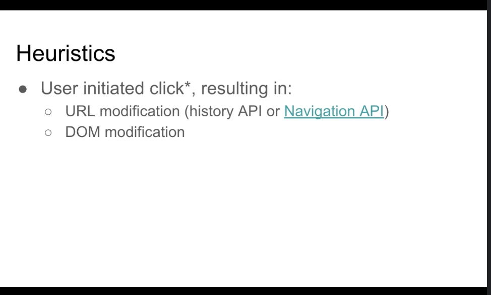
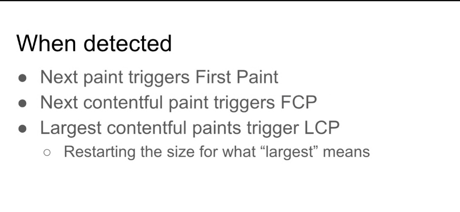
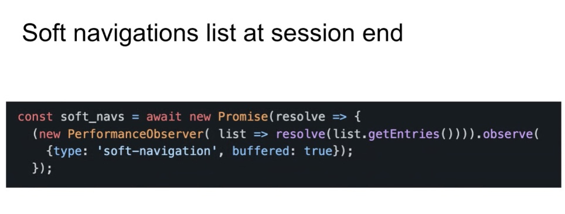
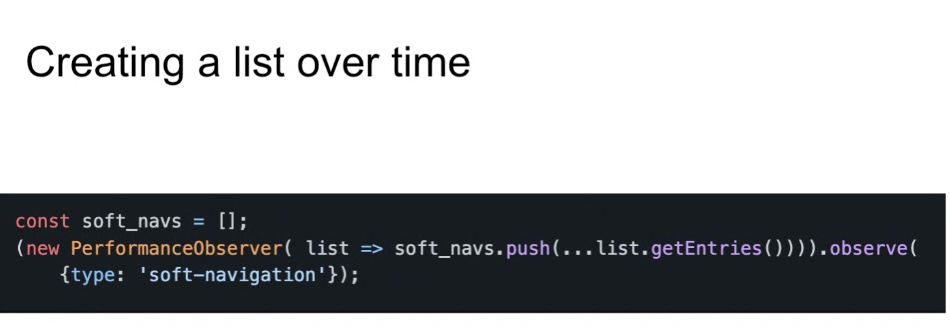
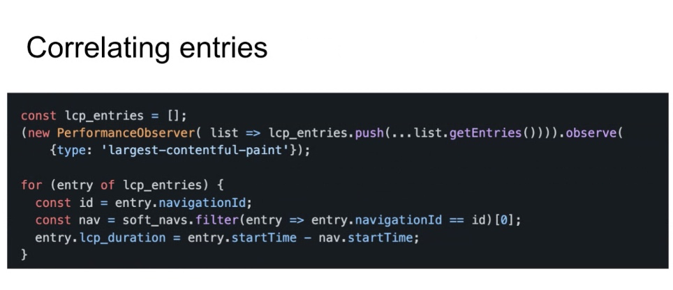
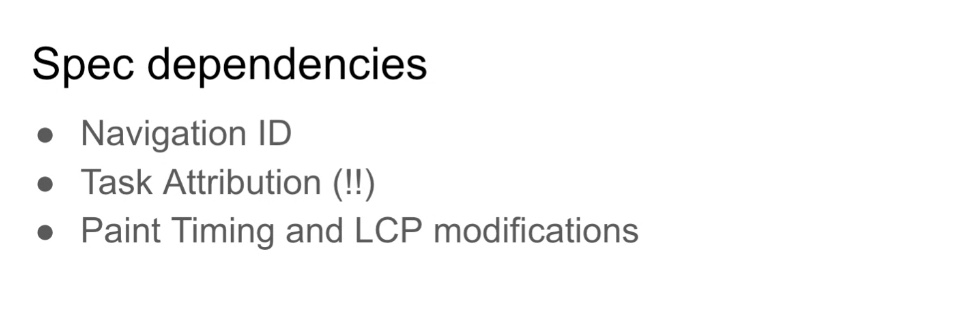
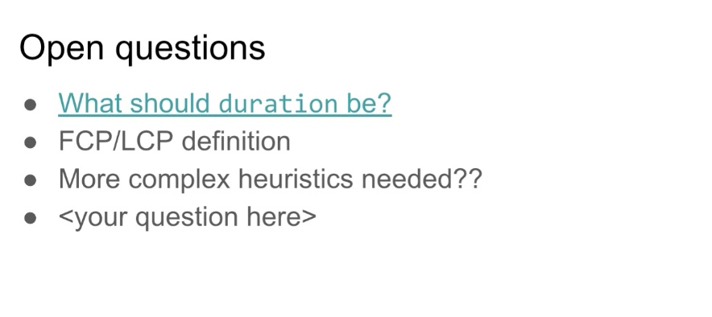

Participants
- Yoav Weiss, Nic Jansma, Abin Paul, Aoyuan Zuo, Barry Polland, Benjamin De Kosnik, Carine, Gilberto Cocchi, Lan Wei, Michal Mocny, Noam Helfman, Alex Jose, Hao Liu, Nicolás Peña Moreno, Patrick Meenan, Sean Feng, Alon Kochba, Giacomo Zecchini, Lucas Pardue, Philip Tellis
Admin
- Next meeting - November 10th @ 11am EST / 8am PST
Minutes
Recording
- Yoav: Leftover topic from TPAC that we didn’t get time for
- … Previously we talked about measuring SPAs at TPAC ‘21
- … This year we talked about Task Attribution at TPAC ‘22, which is needed for heuristics to work properly
- … Explainer on Github, WICG proposal, Chromium prototype implemented behind a flag
- … Plan for an Origin Trial for folks to try out soon
- … Use cases - SPA navigations that are JavaScript driven, and use-case to allow developers to measure that to correlate their performance entries of various types to corresponding soft navigations
- … True for all existing performance entries, for load-related (FP, FCP, LCP) it might be interesting to re-trigger those entries in case of soft navigation and be able to measure the impact of those paints
- … Started with simple heuristics
-  height: 376.00px; margin-left: 0.00px; margin-top: 0.00px; transform: rotate(0.00rad) translateZ(0px); -webkit-transform: rotate(0.00rad) translateZ(0px);" title="">
- … Based on user initiated click*, that results in both a URL modification (history or Navigation API) plus a DOM modification
- … Both need to be from user click
- … Which is why we need task attribution for that
- … Asterisk on click, Michal pointed out that some click events we need to account for accessibility as well. Will need to extend heuristic a bit to cover keyboard-driven interactions
- … When a soft navigation is detected
-  height: 288.00px; margin-left: 0.00px; margin-top: 0.00px; transform: rotate(0.00rad) translateZ(0px); -webkit-transform: rotate(0.00rad) translateZ(0px);" title="">
- … First paints, FCP and LCPs will restart
- … Resetting the fact that LCPs stopped after an interaction
- … Will continue until the next interaction
- … Will also trigger a new entry, soft navigation entry

- … navigationId is a way for us to designate different navigation types
- … Includes start time, time when click event started
- … name is soft nav url
- … entryType is soft navigation
- … duration TBD
- … Examples
-  height: 237.33px; margin-left: 0.00px; margin-top: 0.00px; transform: rotate(0.00rad) translateZ(0px); -webkit-transform: rotate(0.00rad) translateZ(0px);" title="">
- … List of soft navigation at sessions’s end, use PerformanceObserver with buffered flag
- … If you want to create a list over time as page is loading:
-  height: 221.33px; margin-left: 0.00px; margin-top: 0.00px; transform: rotate(0.00rad) translateZ(0px); -webkit-transform: rotate(0.00rad) translateZ(0px);" title="">
- … And then you can correlate entries with those navigation:
-  height: 269.33px; margin-left: 0.00px; margin-top: 0.00px; transform: rotate(0.00rad) translateZ(0px); -webkit-transform: rotate(0.00rad) translateZ(0px);" title="">
- … In this example it’s LCP
- … Take your list of soft navigation, filter them to find the soft navigation entry with that ID
- … Apply the duration based on the entry’s start time minus navigation start time, would be duration compared to soft navigation
- … In terms of spec dependencies: height: 216.00px; margin-left: 0.00px; margin-top: 0.00px; transform: rotate(0.00rad) translateZ(0px); -webkit-transform: rotate(0.00rad) translateZ(0px);" title="">
- … Navigation ID has a PR against HTML
- … Also relies on Task Attribution which needs to be specified
- … Finally this depends on LCP and PaintTiming modifications
- … Chrome status:

- … We have a somewhat working prototype
- … Working well enough
- … A bunch of bugs that people who played around with a prototype filed
- … Issues on Github repo for ideas or thoughts
- … Would like folks to chime in on WICG proposal to move from Yoav’s repo to WICG
- … Questions:
-  height: 278.67px; margin-left: 0.00px; margin-top: 0.00px; transform: rotate(0.00rad) translateZ(0px); -webkit-transform: rotate(0.00rad) translateZ(0px);" title="">
- … What is the end time? One option is when heuristic determines when soft navigation happened
- … Another open question is around LCP and FCP definition
- … Not considering LCP/FCP direct result of user interaction, stopping task attribution start at point where soft navigation has happened, but not taking it further
- … Looking to gather data for people trying this out in production via Origin Trial
- … Maybe we need more complex heuristics, false positives
- Ian: Do we think heuristics are always sufficient, or do we need a way for a site to say it’s doing a soft nav and stopping it
- Yoav: Ideally, from a metric collection point of view, it would be if heuristics are sufficient
- … If they’re not sufficient, if we improve on them, we steer them towards better ways like Navigation API so they’re clearer
- … I can see it being augmented if it’s insufficient but it wouldn’t be the ideal outcome
- Philip: My question is around DOM modifications which could result in resources
- … Particularly images and JavaScript, maybe CSS. Images would end up in ResourceTiming, do we extend the duration to that. Script and CSS could initiate other resources, do we wait for that cascading effect.
- … Do we include them all in duration?
- Yoav: This is what I initially thought duration should be
- … Michal correctly pointed out we can’t wait to emit the entry until it’s done, as we’ll create some tension, they’ll get navigationId in their ResourceTiming and not be able to correlate it until it’s done later on
- … I think it may make sense if we were to imitate a load event for soft navigations, emulate a separate entry for that
- Philip: navigtationStart and end is two separate entries
- Yoav: Something like that yeah
- … Task attribution would follow all resources triggered by user interaction task
- … Once all those tasks are done, then we declare navigation is done
- … That’s at least currently what I’m thinking
- Nic: Logic in Boomerang takes a lot of resources. Lots of value in being to declare a navigation end without jumping through hoops. Would be more efficient and accurate.
- … Can’t monitor when JS finished loading, etc
- … Task attribution could be super powerful for that
- … Would love to experiment with this and compare to Boomerang’s heuristics
- … Talked about restarting LCP. Should we consider FID as well?
- … Our customers always ask why can’t we get FCP, LCP and FID for soft navigations.
- … So thumbs up to enable that.
- Michal: My understanding of Task Attribution is any task knows the parent that spawned it
- … But does a task know that there will be children? Or can you just get any arbitrary task in the future
- Yoav: Doesn’t know there’s children, but when a task scope is terminated you can know if it spawned children during its lifetime
- … When user click task is done, you know whether it did or didn’t spawn other tasks
- … Once entire tree is terminated, the tree of tasks would be done
- … All of this is very theoretical, not how current implementation works, but it could
- Michal: Wondering if there is a definite end point, or if we know there’s other work that could start
- … Or do we have to rely on convention, like LCP, where we measure all paints through the end
- Yoav: Theoretically you could have some navigations that never terminate, like spawning tasks on an interval
- … We’d have to figure out a way to deal with that
- … For most things we’d see a duration
- Sean: Question for navigation entry, is the main purpose to post a navigation ID?
- Yoav: Mostly to help with navigation’s start time, name, and potentially duration until it was discovered
- … ID is something that was discussed in the past, exposing on all PerformanceEntries, so we can tie into any arbitrary entry (BFCache, Soft, etc)
- Sean: Navigation ID, we cannot get the ID from the navigation event?
- Yoav: We don’t want to expose multiple NavigationTimings
- Sean: The specific ID for this soft navigation, with Navigation API
- … navigation event gets fired, can you get the ID from that event handler there? Just use that ID
- Yoav: Then queue the entry until the navigation’s duration is done
- … Could work
- … If we’re waiting until all the tasks are done, there could be soft navigations that are never done
- Nic: If I saw a navigation ID that didn’t have a PerfEntry, could I presume that it exists, and from the “navigate” event’s timestamp get the start time there
- Yoav: Seems less ergonomic than getting from PerfEntry
- Michal: Less ergonomic, RUM providers loading late won’t be buffered, you’d have to register navigate listeners
- … Speaking of Navigation API, one reason not to use it, is most of the routing on the web today is not using it
- … Goal here is to make it work with the existing
- Yoav: Yeah I’m not sure if Navigate API doesn’t also fire for history pushState things
- Michal: It will
- Yoav: If you’re registering on an event, you’ll get the start time of that event, and if multiple routers doing it and one is doing more work, it will vary whether you’re running before/after that router
- … If people would like to wait for the entry until it’s complete, we can complete it
- Nic: Analogy with ResourceTiming, it delivers entry at end. RUM providers want both notification at start and end, same here for Navs
- Ian: I think we should definitely keep it in the timeline
- Michal: Part of proposal for Navigation API, programmatic navigation vs. user-initiated navigation, the only thing user-initiated is declarative, anchor or form. But if you handle a click event and manually navigation, it doesn’t support through one level of direction. I think task attribution could plug that hole.
- … Have you considered programmatic navigation that originate with a user click
- Yoav: I do consider navigations that start from random clicks. Was going to just start with Navigation API and semantic elements, but it doesn’t capture what’s happening today
- … For Navigation API we could plug that hole if initiated
- … Don’t know what hte implications are between programmatic and user-initiated for the Navigation API
- … You will need Task Attribution for that if you want to tie-in calls to Navigation API happen outside of the click event
- … If in the click it’s well known
- Michal: Right now in the click event if you navigate it’s declared as programmatic
- … Right now we use semantic elements like anchor, but if you could use task attribution and found a programmatic was triggered, you could use it for any element.
- … i.e. photoshop like app with drag and drop
- … Should we constrain at all, just say any user-initiated event at all that meets this criteria
- Yoav: i.e. why restrain to clicks?
- … Seemed obvious first choice
- … Accessibility issues as you’ve pointed out, example to KB based navigation
- … Drag+Drop seems out there but
- Michal: Global KB shortcuts that navigation a page but don't’ force interacting with an anchor
- Yoav: Open to discuss any of those
- Philip: For boomerang we decided to not go with programmatic interactions, because user may not have intended for something to be loaded off the network for page state to change
- … Was not considered a user-initiated navigation
- … Another example is auto-complete for search and results in network traffic but not a navigation
- Related: https://github.com/w3c/largest-contentful-paint/issues/104
- Michal: TPAC followup - presented on paint timings at TPAC
- … great hallway conversations and Sean prodded a bit
- … Folks talked about Interop 2023 and we ask if WebPerf should make a proposal
- … Put together a proposal, where the bulk is based on issue LCP#104
- … A lot of the questions raised will help LCP interop at Mozilla
- … Differences in interop in terms of timing exposed and paint operations
- … Found other issues on how we deal with render throttling, page visibility, paints, etc
- … Stems down to 2 questions: which timings are exposed for measure animation frame and which animation frames are measured
- … Paint Timing both adds a time point (“mark paint timing”) and select specific animation frames timings (first paint, first contentful paint). Element Timing adds another time point (“render time”) and adds another way to select animation frames for timing ( via element-timing), and LCP only adds a way to select animation frames for timing (LCP candidates)
- … Focus on FCP, when it’s reported and which timings are reported
- … Bug open question re tests
- … Tests are testing the basic functionality but not that the times are testing the user experience
- … Similar to testing animation frames, need to be manual or video based
- … Questions?
- Yoav: Regarding FCP right now, do you know what the landscape is? Chromium vs. Webkit differences. Is Mozilla in agreement with one of them?
- Michal: Two main differences is there is a point in HTML that we updated for whne to mark PaintTimings, separate steps for ElementTimings. Chrome expsoes the ElementTiming definition, but not the PaintTiming definition. I think there’s value in the ElementTiming definition, but there’s also value in PaintTiming.
- … Talked about at TPAC and summarized in this thread
- … For consistency reasons it’d be better if everyone labeled directly
- … So then you can compare paint on this platform to another, render on this platform to another
- … Valuable to every implementer for consistency and interop, as well developer to have those timings
- … Second part, maybe less important?
- … There are multiple points in rendering, and we’re not always consistently labeling those
- … There’s a point in render, where we’re marking different times and frames in some situations
- … Both of those are part of the interop proposal
- … Didn’t include fixing issues in ET, PT, LCP for Interop 2023, but fixing these issues would help with those
- Yoav: Any objections?
- … What’s the level of commitment required?
- … Guessing someone will need to drive writing more tests
- … But implementors will need to commit to aligning
- Michal: I think writing tests would have to come this quarter, for this proposal to get accepted.
- … Then all 2023 to try to align
- … But even if this doesn’t get selected, I think this is valuable work
- … End of Oct and end of Nov deadlines for various things
- … Not sure when exactly they get picked
- … I think they’re looking for support/demand for these proposals, so if anyone has feedback for the issue